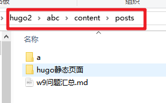
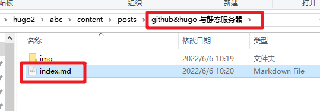

github&hugo 与静态服务器
Contents
github&hugo 与静态服务器
如何顺畅的进入github
通过浏览器扩展 某个免费VPN
- 免费的vpn不一定稳定
- 不推荐一直使用
- 存在不稳定性、不安全性
国内镜像站
- 存在不稳定性
- 关于git命令的操作需要修改域名
修改hosts文件
- 对域名和IP的重新绑定
- hosts文件位置
- C:\Windows\System32\drivers\etc
- 资源
github加速神器 fastgithub
- dotnetcore/FastGithub: github加速神器，解决github打不开、用户头像无法加载、releases无法上传下载、git-clone、git-pull、git-push失败等问题
- 运行 fastgithub.exe
创建仓库以及设置ssh
创建仓库、开启pages
- 方便快捷
设置ssh
- GitHub如何配置SSH Key_前端向朔的博客-CSDN博客_github ssh
- 验证
ssh -T git@github.com
hugo静态页面发布到github
hugo基本操作
- 略……
- 生成了public文件夹
通过git命令上传到github
-
在bash中进入hugo的new site（abc）文件夹进行发布
-
SD@DESKTOP-0DCL18 MINGW64 ~/Desktop/hugo2/abc $ hugo -D
-
-
进行git命令操作的时候，需要进入到public文件夹
-
SD@DESKTOP-0DCL18 MINGW64 ~/Desktop/hugo2/abc $ cd public SD@DESKTOP-0DCL18 MINGW64 ~/Desktop/hugo2/abc/public $ git init Initialized empty Git repository in C:/Users/SD/Desktop/hugo2/abc/public/.git/ SD@DESKTOP-0DCL18 MINGW64 ~/Desktop/hugo2/abc/public (master) $ git remote add origin git@github.com:mixleeli/www.git SD@DESKTOP-0DCL18 MINGW64 ~/Desktop/hugo2/abc/public (master) $ git checkout -b main Switched to a new branch 'main' SD@DESKTOP-0DCL18 MINGW64 ~/Desktop/hugo2/abc/public (main) $ git pull origin main
-
-
上面的命令可以将远端的仓库内容合并到本地仓库
-
在本地进行修改操作后，推送到远端仓库。
-
SD@DESKTOP-0DCL18 MINGW64 ~/Desktop/hugo2/abc/public (main) $ git add . ………… SD@DESKTOP-0DCL18 MINGW64 ~/Desktop/hugo2/abc/public (main) $ git commit -m "loveit" ………… SD@DESKTOP-0DCL18 MINGW64 ~/Desktop/hugo2/abc/public (main) $ git push origin main
-
-
本地仓库与远端仓库已经一致。
将本文件上传到github
保存文件
将文件拷贝到hugo网站中的 content\posts\文件夹下
-

-
建立与网页名字相同的文件夹，并修改网页文件名为index.md
- 
-
重复1.3里面的操作步骤。